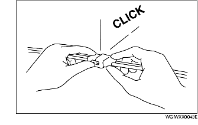

INSTALACION ELECTRICA
B3E000000006101
Conectores
Desconexión de los conectores
-
• Cuando se desconectan los conectores, agarrar los conectores mismos y no los cables.

-
• Los conectores pueden ser desconectados empujando o tirando la palanquita de bloqueo como se muestra en la figura.

Bloqueo de los conectores
-
• Cuando se bloquean los conectores se debe escuchar un "clic" que indica que se han bloqueado correctamente.

Control
-
• Cuando se usa un comprobador para controlar la continuidad o medir la tensión, introducir la punta de prueba del comprobador por el lado del cableado.

-
• Controlar los terminales de los conectores de junta estanca por el lado del conector ya que no son accesibles por el lado del cableado.
-
Advertencia
-
• Para evitar daños en el terminal, envolver un delgado hilo alrededor de la punta de prueba del comprobador antes de introducirlo en el terminal mismo.